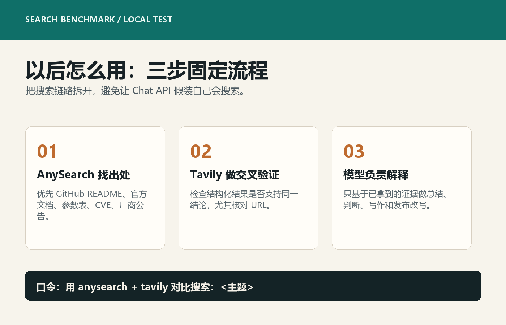

AnySearch 命中 `colbymchenry/codegraph` README，并直接带出关键表格：VS Code 样本从 52 calls / 1m37s 降到 3 calls / 17s。Tavily 则优先返回了 Visual Studio Marketplace 上另一个 CodeGraph，语义相关但项目对象偏了。
01 / verdict
结论很明确：技术检索优先 AnySearch，Tavily 做第二搜索源。
AnySearch 在这轮测试里最适合拿来找原始出处，尤其是 GitHub README、官方文档、benchmark 数字、参数表和开源工具说明。Tavily 的结构化结果更规整，适合补充和交叉验证，但遇到重名项目时会被带偏。Brave 这次本机没有完整 API key，网页版又出现 429，所以只能列为“可接入，但未完整实测”。DeepSeek Chat API 不应该当搜索引擎用，它适合解释、压缩和总结，不适合负责找出处。
AnySearch：主搜索源
优先用于技术检索、README、docs、GitHub 项目、benchmark、参数表。它的价值在于更容易把 agent 带到原始页面。
Tavily：第二搜索源
结构化 JSON 好处理，适合做补充证据、网页摘要和 RAG 入口。但不能无脑相信 answer，必须看 URL 是否对题。
Brave / DeepSeek：边界清晰
Brave 需要 API key 和限流处理；DeepSeek 只做理解和归纳，不承担搜索职责。
以后不是“搜一下”，而是“先 AnySearch 找原始出处，再 Tavily 做交叉验证，最后让模型解释”。
02 / matrix
四种方式的角色，不应该混在一起。
| 工具 | 适合做什么 | 这次暴露的问题 | 建议位置 |
|---|---|---|---|
| AnySearch | GitHub README、官方文档、开源项目说明、benchmark、参数表、URL extract。 | 中文结果有时会混入低质量页面；重名项目仍需指定仓库、作者或 URL。 | 技术检索第一搜索源。 |
| Tavily | API 化搜索、结构化结果、网页摘要、agent RAG 的第二来源。 | CodeGraph 样本里被另一个同名项目带偏，answer 看起来完整但不一定命中目标。 | 第二搜索源和交叉验证。 |
| Brave Search | 通用网页搜索，本来适合补齐搜索生态。 | 本机没有 API key，网页版出现 429，无法完整实测。 | 等 `BRAVE_SEARCH_API_KEY` 接好后再进主流程。 |
| DeepSeek Chat API | 解释搜索结果、压缩长文、总结差异、生成最终判断。 | 不能访问实时网页，不应被当成搜索工具。 | 搜索后的理解层。 |
03 / evidence
关键样本里，AnySearch 的优势主要体现在“命中原始出处”。

AnySearch 和 Tavily 都能找到 CodeGraph 相关结果，但重名项目问题很明显。结论是：搜技术项目必须带仓库名、作者名或精确 URL，否则“看起来相关”的结果会把 agent 带偏。
AnySearch 命中了 OpenSSF、JFrog、NVD 等安全出处；Tavily 命中了 Datadog、OpenSSF、JFrog。安全类查询的正确用法不是只看一个 summary，而是优先抓官方/安全机构/供应商公告。
AnySearch 先找到 Stack Overflow 和 InfoQ，Tavily 命中 ngrok 官方博客与 docs。这个样本说明 Tavily 很适合作补官方文档，尤其是 query 明确指向产品功能时。
AnySearch 和 Tavily 都能命中 OpenAI 文档、社区发布、API reference。涉及 OpenAI 产品时，最终仍应优先回到官方文档确认。
04 / workflow
以后直接按这个工作流跑，不要把搜索、解释、发布混成一锅。

先用 AnySearch 找原始出处
目标是 README、官方 docs、GitHub、NVD、厂商公告、参数表，而不是先要模型总结。
再用 Tavily 做交叉验证
看结构化结果和摘要是否支持同一结论，重点检查 URL 是否命中同一个项目或同一份文档。
最后用模型解释
让模型只处理已经拿到的证据：抽结论、比较差异、写文章、生成使用建议。
用 anysearch + tavily 对比搜索：<你的问题>
优先找原始出处，输出 AnySearch / Tavily 命中差异、关键 URL、最终建议。如果主题是 GitHub 项目，查询里最好带上仓库名或作者名；如果主题是官方产品，查询里最好带 `docs`、`pricing`、`api reference`、`official` 这类限定词。
05 / limits
这次测试也暴露了几个不能忽略的坑。
| 问题 | 影响 | 处理办法 |
|---|---|---|
| 重名项目 | CodeGraph 这种名字容易命中多个项目，摘要会看起来都对。 | 查询中加入 `owner/repo`、GitHub URL、包名或关键 benchmark 数字。 |
| Brave 未完整实测 | 本机缺 API key，网页版出现 429，无法严肃比较。 | 接入 `BRAVE_SEARCH_API_KEY` 后重新跑同一套样本。 |
| Chat API 不是搜索 | DeepSeek 可以解释，但不能保证实时出处。 | 把 Chat API 放在“结果解释层”，不要放在“找出处层”。 |
| 旧报告存在编码损坏 | 部分标题和标签已经变成乱码占位符，直接转 HTML 会污染成品。 | 成品文章重写正文，只复用可确认的原始结果和截图。 |
给其他 Agent 的最短交代
以后你可以直接发下面这句话：
用 anysearch + tavily 对比搜索：<主题>
要求：AnySearch 优先找 GitHub README / 官方 docs / 原始出处；Tavily 做第二搜索源；输出命中差异、关键 URL、结论和使用建议。如果是非常具体的技术对象，再补一句：
注意避免重名项目，查询里带 owner/repo、官方域名、包名或关键 benchmark 数字。原始产物保留在 `F:\codex\reports\anysearch-comparison\`；本 HTML 成品与图片资产已归档到 `C:\html\articles\anysearch-comparison\`。